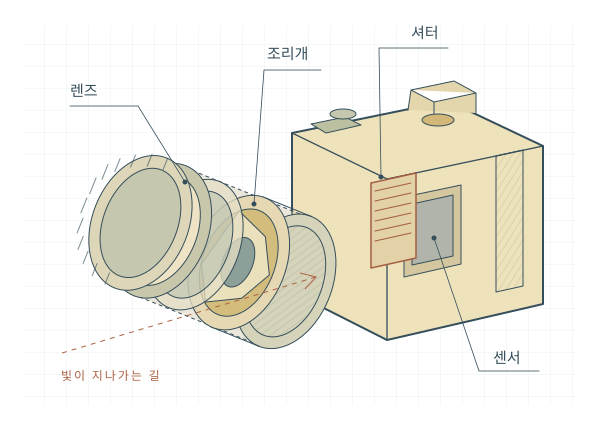

탐구생활
뜯어보고, 움직여보고, 알아가는 재미

준비 학습 · 전체 살펴보기
무엇이 들어 있을까요?
끌어서 돌리고, 슬라이더로 열어보세요.
렌즈 뒤에 숨은 구조가 나타납니다.
렌즈는 빛을 모으고, 조리개는 빛의 통로를 조절합니다. 셔터가 시간을 나누면, 센서가 그동안 도착한 빛을 기록합니다.
구조 이해를 위해 직접 그린 일반화된 미러리스 카메라 모형입니다. 특정 제품의 설계도나 실측 복제품은 아닙니다.
탐구 하나 · 렌즈
렌즈는 빛을
어떻게 모을까요?
한 점에서 출발한 빛은 여러 방향으로 퍼집니다. 볼록렌즈는 이 빛을 꺾어 반대쪽의 한 점으로 모읍니다. 이 점들이 모여 상을 이룹니다.
센서가 그 자리에 있어야 선명한 사진이 됩니다. 초점을 맞춘다는 것은, 결국 상이 맺히는 면과 센서의 위치를 맞추는 일입니다.
이 실험의 초점거리 f는 60 mm입니다. 물체 거리 u가 바뀌면 상 거리 v도 달라집니다. 실제 사진 렌즈는 여러 유리와 내부 초점군으로 구성되며, 여기서는 한 장의 이상적인 얇은 렌즈로 단순화했습니다.
탐구 둘 · 조리개
조리개를 조이면
무엇이 달라질까요?
겹쳐진 날들이 회전하며 빛이 지나갈 통로를 만듭니다. 조리개를 조이면 통로가 좁아지고, 같은 시간 동안 들어오는 빛이 줄어듭니다.
f값은 초점거리를 입사동공 지름으로 나눈 값입니다. 숫자가 커질수록 구멍은 작아집니다. 아래 날의 움직임과 빛의 양을 함께 보세요.
f/1.4 대비 빛의 양
25%
초점거리 50 mm 기준
입사동공 지름 17.9 mm
빛의 양 ∝ 1 / N²
f/2.8에서 f/4로 한 스톱 조이면 빛의 양은 약 절반이 됩니다. 지름이 아니라 면적이 빛의 양을 결정하기 때문입니다. 이 모형은 개구 크기를 입사동공에 대응시킨 개념도이며, 실제 입사동공은 앞쪽 렌즈를 통해 보이는 조리개의 상입니다.
탐구 셋 · 셔터
셔터는 1/8000초를
어떻게 만들까요?
센서 앞에는 두 개의 셔터막이 있습니다. 선막이 내려가며 빛을 드러내고, 뒤따르는 후막이 다시 가립니다. 두 막이 지나가는 시간 차이가 각 지점의 노출시간입니다.
고속에서는 선막이 다 내려오기 전에 후막이 출발합니다. 센서 전체가 한꺼번에 열리는 대신, 좁은 틈이 센서를 훑고 지나갑니다.
이동 속도 × 노출시간
이 모형은 막의 센서 통과시간을 4 ms(1/250초)로 가정합니다. 1/1000초에서는 센서 높이의 약 ¼, 1/8000초에서는 약 1/32만 열립니다. 기종별 통과시간과 동조속도는 다릅니다. 플래시 실험은 순간 발광을 단순화한 것으로 HSS는 포함하지 않습니다.
형태 차이를 보기 위해 이동량을 확대했습니다. 실제 왜곡은 피사체의 속도·방향과 센서의 기록 시차 등에 따라 달라집니다.
탐구 넷 · 센서
센서는 색을
어떻게 기록할까요?
일반적인 베이어 방식 센서는 화소마다 빨강·초록·파랑 중 하나의 필터를 둡니다. 각 화소가 기록한 빛의 세기를 바탕으로 주변 값을 참고해 색을 복원합니다.
한 화소가 세 가지 색을 모두 측정하는 것은 아닙니다. 측정한 값과 계산한 값이 만나 우리가 보는 컬러 사진이 됩니다.
초록 화소가 절반, 빨강·파랑이 각각 ¼입니다. 화소를 누르거나 방향키로 이동해 측정한 채널을 볼 수 있습니다.
화소를 눌러 측정값 살펴보기 · 키보드는 방향키
G B
이 실험은 작은 색 장면을 RGGB로 샘플링한 뒤 주변 화소를 보간합니다. 실제 카메라는 노이즈 처리, 화이트밸런스, 색 변환 등 더 복잡한 처리를 거칩니다. 모든 센서가 베이어 배열을 사용하는 것은 아닙니다.
탐구 다섯 · 사진 실험
같은 장면을
다르게 찍어 봅시다.
조리개와 셔터를 함께 움직여 보세요. 같은 밝기로도 움직임의 흔적과 배경의 선명함을 다르게 기록할 수 있습니다.
ISO를 올리는 것은 렌즈로 들어오는 빛을 늘리는 일이 아닙니다. 같은 센서 노출에 대한 출력 밝기를 높입니다. 어떤 빛을, 얼마나 오래 모을 것인가. 사진은 이 선택에서 시작됩니다.
기준 노출: f/4 · 1/250초 · ISO 100. 심도·움직임·밝기를 비교하는 개념적 렌더링이며 실제 렌즈나 센서의 화질을 재현하지 않습니다. 밝기 맞추기는 조리개와 ISO를 가능한 범위에서 조절합니다.
서로 다른 설정으로 촬영해 보세요. 최근 네 장을 나란히 비교할 수 있습니다.
탐구를 마치며 · 나의 관찰 기록
오늘 무엇을 발견했나요?
처음의 카메라가 조금 다르게 보이나요?
직접 움직이며 알아낸 것을 내 말로 적어 봅시다.
- 조리개 숫자가 커졌을 때, 구멍과 빛의 양은 어떻게 달라졌나요?
- 빠른 셔터에서는 왜 센서 전체가 한꺼번에 열리지 않았나요?
- 다시 카메라를 조립한다면 각 부품의 역할을 설명할 수 있나요?
선생님도 궁금한 모형 이야기 · 참고 자료
이 페이지의 카메라와 모든 장면은 코드로 제작했습니다. 실제 취재 사진·실존 인물의 발언을 포함하지 않습니다. 원리 설명용 모형으로 기종별 구조·성능 차이가 있으며, 제작 중 시안으로 검색 노출을 차단했습니다.
- Canon · A Look at the Shutter Modes in Canon EOS Cameras ↗
- Nikon · What is Aperture? ↗
- Nikon · Understanding Focal Length ↗
- Basler · Demosaicing Mode ↗
- OpenStax · Thin Lenses ↗
- 표현 방식 참고 · Bartosz Ciechanowski, Mechanical Watch ↗
독립적으로 작성한 코드와 도형입니다. 레퍼런스의 모델·소스·이미지를 복제하지 않았습니다.
표지는 옛 학습책의 종이색과 활자, 여백에 고쳐 쓴 손글씨를 새로 구성한 오마주입니다. 특정 교과서의 표지나 삽화를 복제하지 않았습니다.